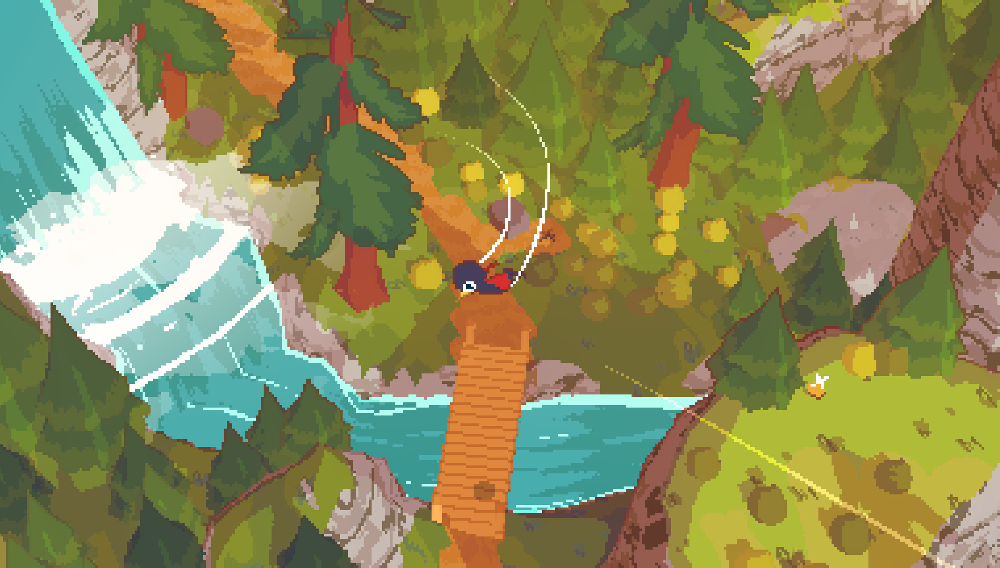
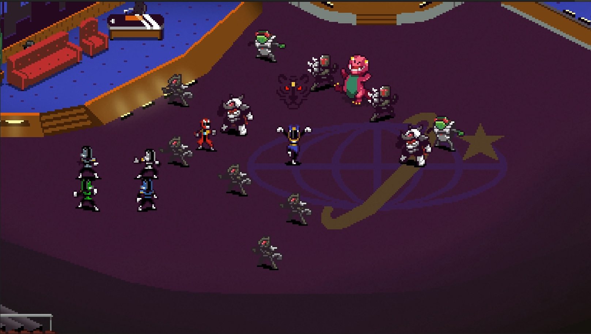
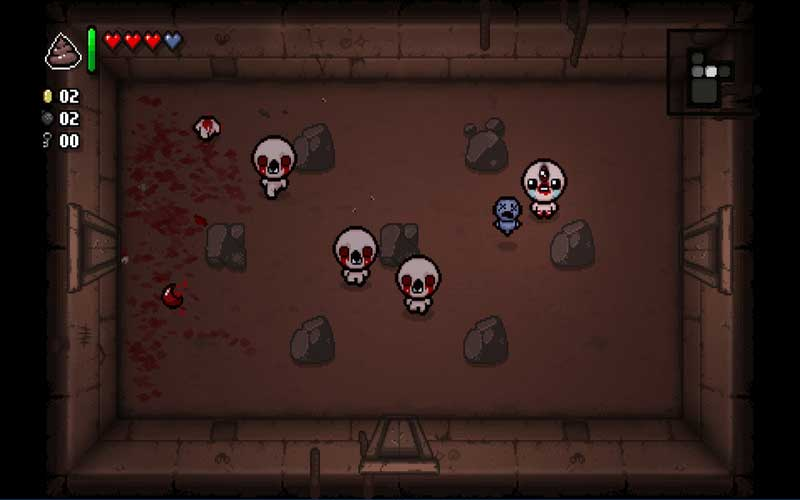
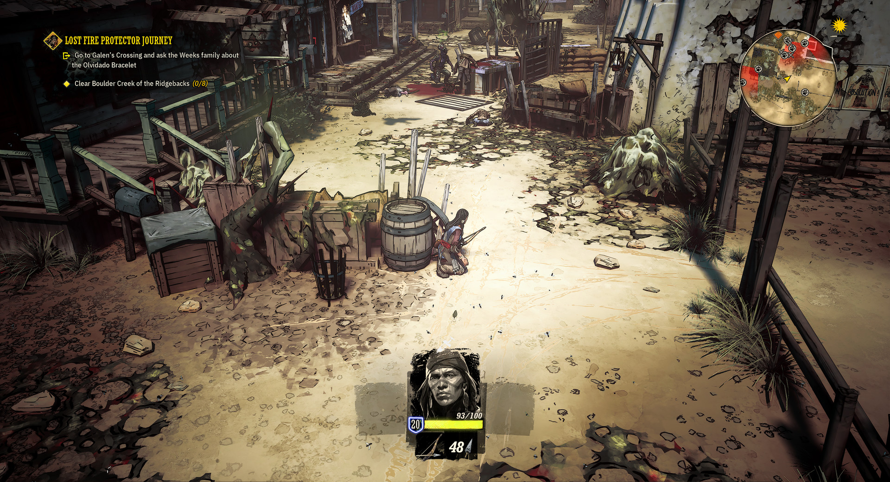

1.
A Short HikeExploration
A very relaxing mountain climbing game with an incredible soundtrack. You play as Claire, a bird trying to hike through a mountain and explore the entire area. As you go through the game you unlock more abilities so that scaling the mountain becomes easier. Although you can skip those and climb the mountain without them as a challenge, it's completely up to you. Not to forget it's intersesting pixel-like 3D artstyle.
Meet people who live by the range or are also climbing along with you, all with their own quirks and personalities. If you enjoy a cozy time exploring the unknown, doing puzzles as you go through and are curious about what's on top of the mountain. I recommend this game to you.
2.
Chroma SquadStrategy-RPG
For the complete opposite now, create your entire own Power Rangers squadron to fight with and record your own show to save yourself from crippling debt and fight evil. This action packed strategy-RPG is flled with personality, combos you can do with your teammates and quite the attention to detail. It's also got it's fair share of comedic moments but still keeps in check by providing great gameplay with a soundtrack fit for a Power Rangers show.
Upgrade your units, create the perfect team strategy and save yourself from crippling debt. If you like strategizing in a surprisngly in-depth combat system you should definitely check this game out.
3.
Hollow KnightAdventure Platformer
If you like a challenge, you'll love this next one. Explore the entirety of Hallownest fighting all kinds of creatures, hard bosses and trek through the depths. Be warned though, this game doenst hold his punches back. It punishes you incredibly hard for making but 1 mistake, you always have to be on your toes while going deeper and deeper.
This game is very often linked to the "Dark Souls" franchise due to it's difficulty mixed with the platforming and movement of a "metroidvania" type game also backed with an incredible soundtrack that imerses you right into the world. This game has quite a lot to it and ramps up in difficulty often, do you have what it takes to beat this game?

4.
The Binding Of Isaac: RebirthDungeon-Crawler
This one's quite messed up and gruesome albeit insanely fun. Play as Isaac or other characters trying to go deeper and deeper to escape from the big bad of the game, Isaac own mother. This dungeon crawler offers a lot more than meets the eye, hundred of hours worth of gameplay with almost endless replayability. Collect items and upgrade yourself so you can take on stronger foes.
This game is an endless cycle of going through the basement, cellar, catacombs or wherever else it brings you and getting tons of items to always get surprised by what you can do with this game. Although it's not the easiest game in the world, you have to be careful for anything that could potentially kill you.
5.
Weird WestImmersive Simulator
Play as 5 different characters in the wild west, going through each of their stories one by one and discovering the mysteries of what's going on, as you get further into the story things get weirder and weirder. As you go through the country you also meet strangers and encounter random events like a bandit raid or wild creature attacking you.
This game is an "Immersive simulator" so you know there's a lot attention to detail. You have to be incredibly careful when for example sneaking inside someones base, 1 bulletshot could alarm everyone there and have you killed in no time. It's story is incredibly interesting and has you wondering about the next thing during every single event.
